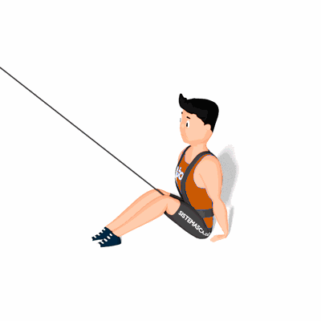

Postura Mesa com Tração Elástica

Exercício de resistência elástica que fortalece os músculos dos braços, punhos e pernas.
Ficha Técnica
Tipo: Funcional
Grupo Muscular: Corpo
Aparelho: Nenhum
Músculos: Nenhum
Como realizar
- Prenda frontalmente o colete de tração elástica em seu tronco;
- Comece sentado com as pernas estendidas à sua frente e com os pés na distância da largura dos quadris;
- Posicione as mãos em cada lado dos quadris, e comece a fazer força com os pés, flexionando os joelhos e elevando o tórax;
- Se não causar desconforto no pescoço, deixe a cabeça cair para trás. Respire profundamente cinco vezes nessa posição e, em seguida, acomode os ossos dos glúteos no solo.
 RC STORE
RC STORE